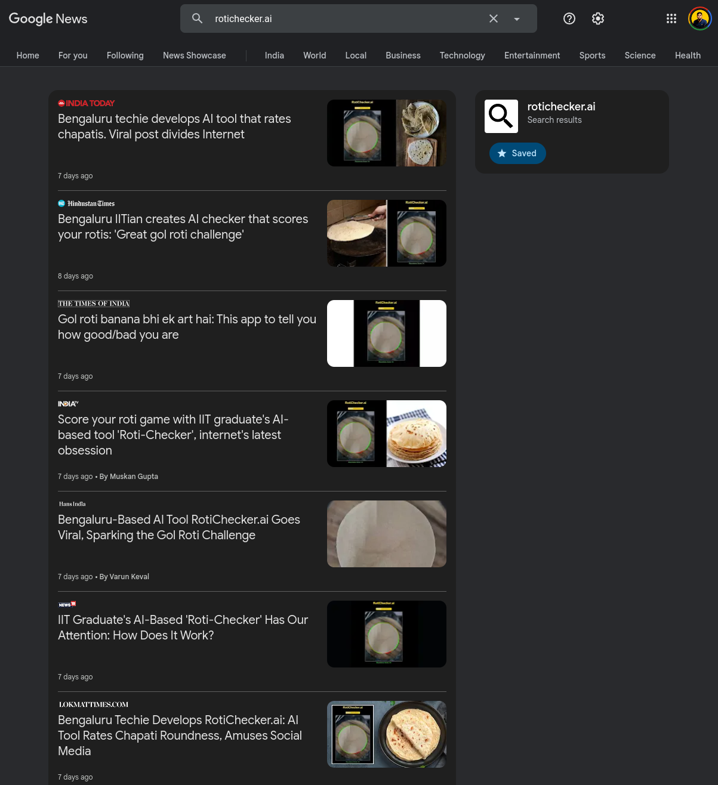

420 likes and https://t.co/8nvLCfLuMe goes public! 🌕 https://t.co/ffhahK51jf pic.twitter.com/5d4rpFsQXV
— Animesh Chouhan (@animeshsingh38) January 31, 2025
420 likes and https://t.co/8nvLCfLuMe goes public! 🌕 https://t.co/ffhahK51jf pic.twitter.com/5d4rpFsQXV
— Animesh Chouhan (@animeshsingh38) January 31, 2025
RotiChecker.ai was built as a joke, but it quickly gained attention across social media. Our AI tool analyzes the roundness of a roti and scores it on a scale of 100. Originally developed in a few minutes, it has now become a viral sensation, drawing curiosity and discussions worldwide.

Dough or Die: The Great Gol Roti Challenge 🥙

RotiChecker.ai made with ❤️ by
Animesh
Chouhan
is licensed under
CC BY-NC-SA 4.0